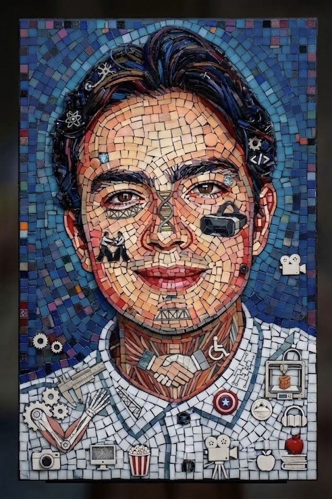
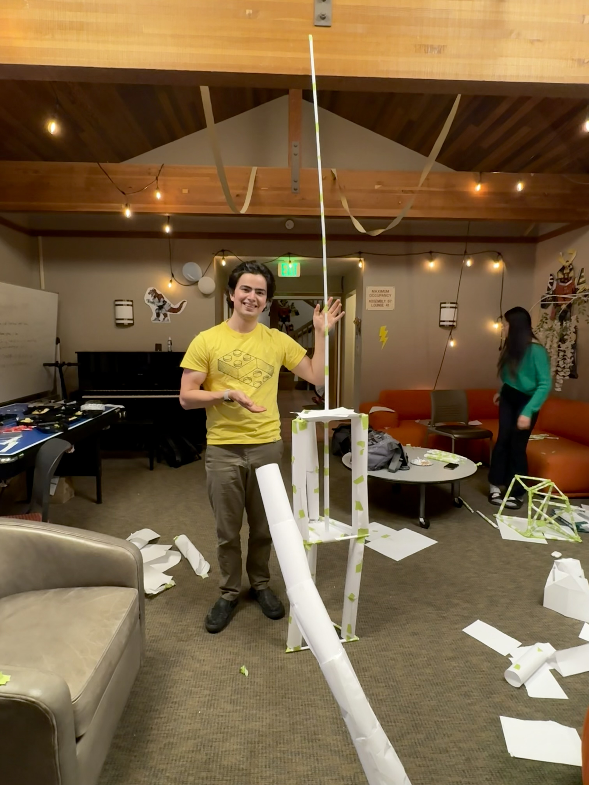
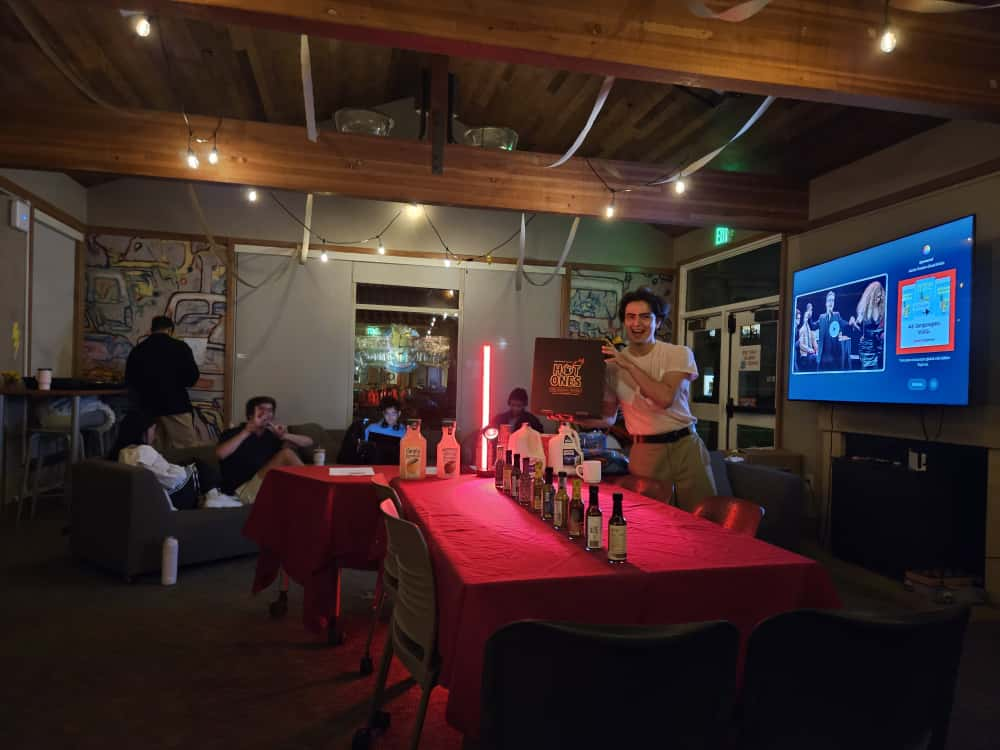
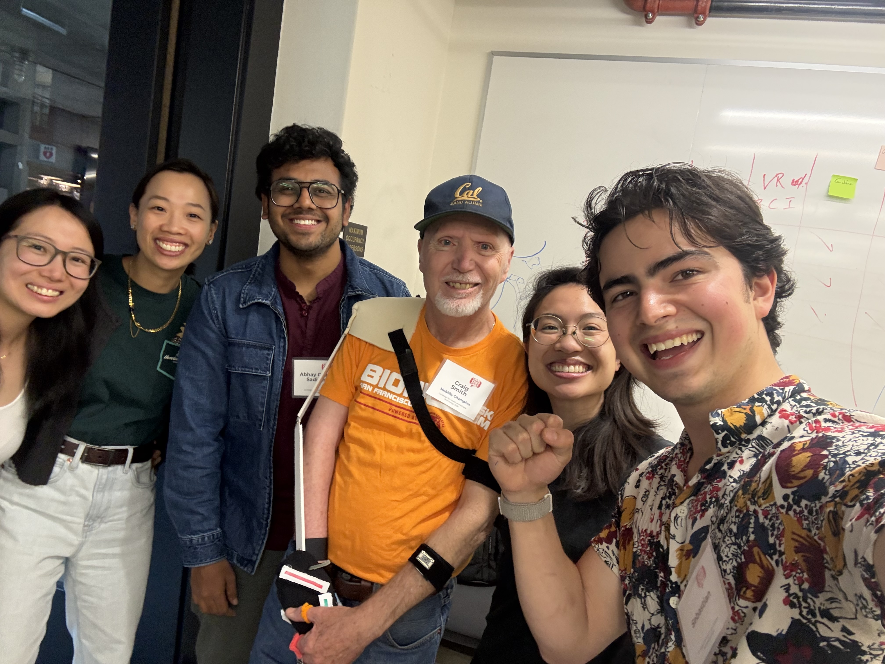
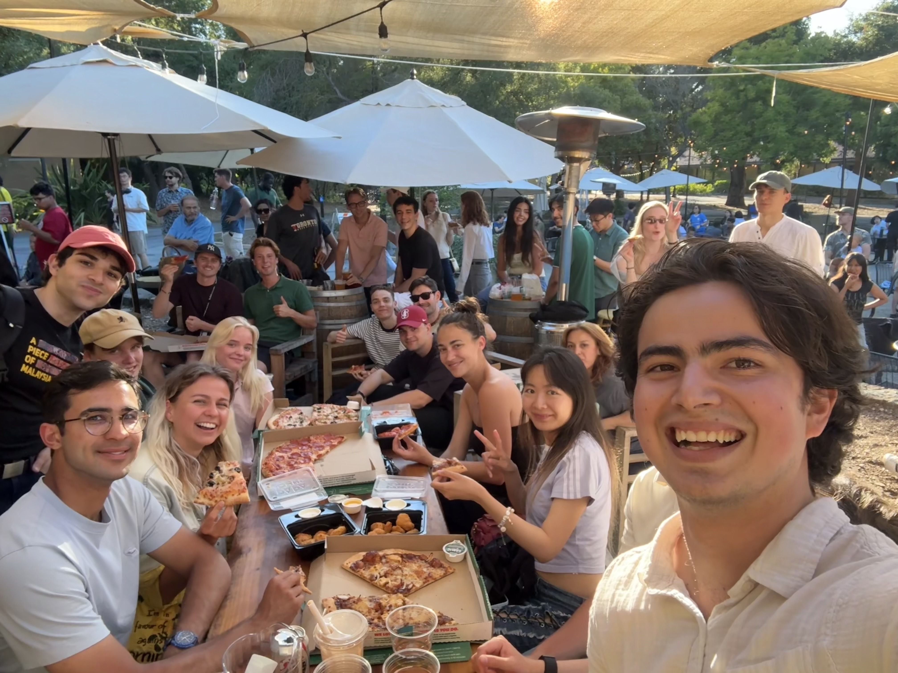
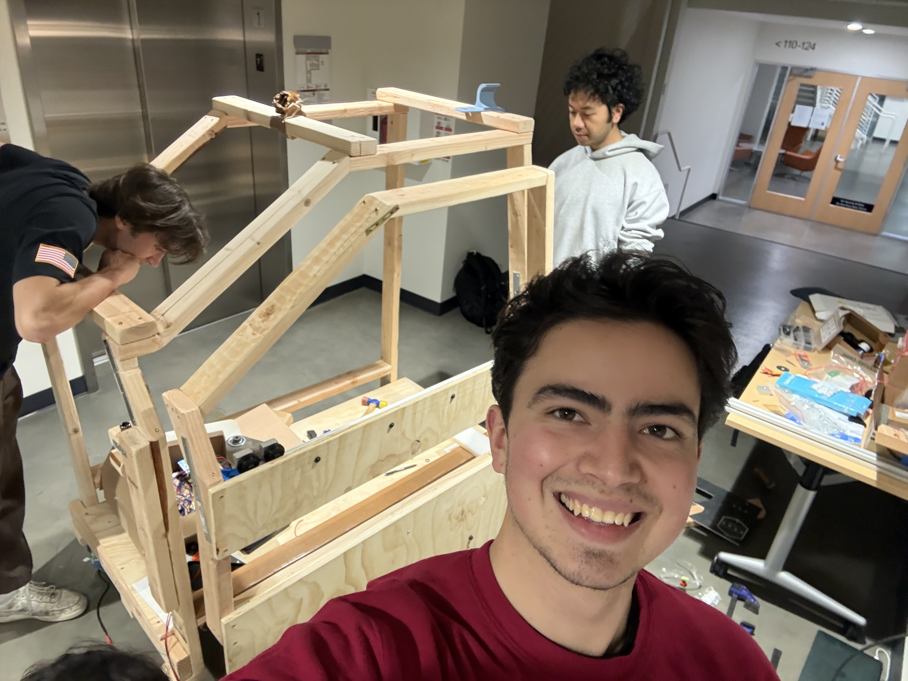

Sebastian Esteva
Bringing wonder through technology.
Engineer.
Communicator.
Builder.
I bring three core strengths to any team: an interdisciplinary skill set spanning engineering, human performance, and design — systems, community, and product alike; a deep curiosity that drives me to understand complex problems from every angle; and strong communication skills developed through hands-on experience.
Two things pulled me toward engineering early on. The first was my grandfather — a world-traveled engineer back in Mexico I mostly knew through family stories, which gave the word "engineer" a kind of mystery. Every time I built a paper airplane or clicked together magnetic toys as a kid, that connection came up: he was an engineer too.
The second was fantasy — Percy Jackson, Avatar: The Last Airbender, any world built on magic. I knew I'd never actually bend water or meet a demigod, but I realized I could build things that captured that same sense of wonder. That's still what drives me today.
Whether it's a physical object, a community, or a system, I'm always looking for the next thing worth making.
Selected
projects.
 ↗
↗
Graduation Pendant
Silver · Metalworking · DesignThe Slip Door
Accessibility · Volkswagen ↗
↗
Bastón
Woodworking · Metalworking ↗
↗
Time Collector
Kinetic Sculpture
Let's build
something
together.




